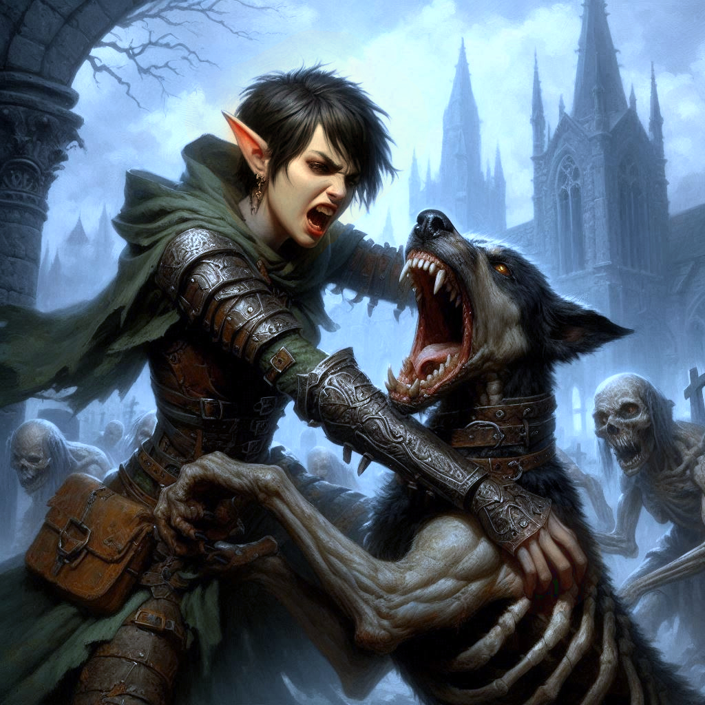

Where Hope Dies
You watch Elias disappear into the dark fog of the Shadow Realm, his form swallowed by the mist and twisted trees. His parting words sting like the arrows you've loosed so many times before—precise and unforgiving. The weight of his decision presses on you. He thinks you're better off alone, and maybe he's right.
Shamurel tugs at your sleeve, his goblin eyes glinting with worry. "We need to go, Kira," he hisses, his voice a scratch in the eerie silence. You nod, your throat tight with unshed anger and grief, but there's no time to linger. Together, you and Shamurel sprint through the jagged path ahead, your footsteps muffled by the thick shadows clinging to the ground. The haunting howls of the hag's hellhound echo behind you, a reminder that the darkness is far from over.
Ahead, a broken iron gate comes into view, rusted and bent. Beyond it lies a sprawling graveyard, rows of crumbling tombstones and half-buried crypts dotting the barren landscape. You hesitate for a moment, but the howls are closer now, and the only way is forward.
Shamurel ducks through the gate, but you pause. You grip the hilt of your blade tighter, your pulse quickening as your heart battles between fear and determination. You’ve fought hags, mercenaries, and your own inner demons, but the graveyard feels different—like a place where hope comes to die.
"Come on!" Shamurel whispers urgently, waving you on. You swallow the knot in your throat and follow him, stepping past the gate into the land of the dead.
The fog thickens as you move deeper into the graveyard, muffling the world around you in a heavy silence. The stench of decay hangs in the air, cloying and thick. The stones beneath your boots shift uneasily, as if something stirs beneath them. You glance back at the way you came—no sign of Elias, no way to turn back.
A low growl cuts through the fog, freezing you in place. The hellhound.
Shamurel’s eyes widen in terror as the mist parts to reveal the hulking beast, its glowing red eyes locked onto you. Behind it, the hag materializes from the shadows, her twisted face illuminated by an unnatural green glow. Her laughter sends chills down your spine.

"I told you we weren’t finished, little ranger," the hag croons, her voice dripping with malice. "Did you really think you could escape me?"
Without warning, she raises her skeletal hand, and the earth trembles beneath you. Crypts creak open with a deafening groan, and skeletal hands claw their way out from beneath the soil. One by one, the dead rise—an army of decayed warriors, their hollow eyes fixed on you.
Your heart pounds in your chest. You draw your sword, the cold steel offering little comfort against the overwhelming odds. Shamurel, ever the survivor, takes a step back, his eyes darting around for an escape. "Kira… we should—"
Before he can finish, the hellhound lunges at you. You barely manage to dodge its snapping jaws, rolling to the side as its claws tear into the earth where you stood. You slash at it with your blade, the strike grazing its dark fur but doing little to slow it down.
The hag laughs again, raising her arms as the undead soldiers begin their slow march toward you. "You will die here, Kira Coldspring. Just like all those before you."
The words ignite a spark of defiance in your chest. You’ve come too far to die like this, but the odds are insurmountable. The undead close in, their bony hands outstretched, reaching for your life. Shamurel bolts, disappearing into the mist without so much as a glance back.
"Shamurel!" you shout, but he's gone, leaving you alone in this cursed place.
The hellhound snarls again, its eyes gleaming with hunger. You lash out with your sword, striking it across the muzzle. It yelps in pain but does not retreat. The skeletal warriors press in from all sides, their weapons glinting in the dim light of the graveyard. You take out two, but for every skeleton that falls, another rises from the graves.
Panic surges through you as the undead tighten their circle around you. Your breaths come faster, your limbs burning with exhaustion. One of them grabs your arm, its cold, bony fingers digging into your skin. You slash it away, but another takes its place.
The hag's voice echoes in your ears. "Your strength is fading, little ranger. Give in."
You won’t give in. You can't. Not like this. Not after everything.
But it’s too much. The skeletal hands grab hold of you, dragging you to your knees. The hellhound pounces, knocking the sword from your grip and pinning you to the ground. Its hot breath burns against your skin as it snarls inches from your face.
You struggle, but it's no use. The weight of the undead and the hellhound bear down on you, crushing any hope of escape. The hag steps forward, her twisted grin growing wider. "It’s over, Kira."
Your vision blurs as the last of your strength ebbs away. Thoughts of Baider, Elias, and even Jorsh flash through your mind. You failed them all. Your mission, your friends, your life—all for nothing.
As the darkness closes in, you hear the hag's triumphant laughter, the final sound before everything fades to black.
And then—nothing.